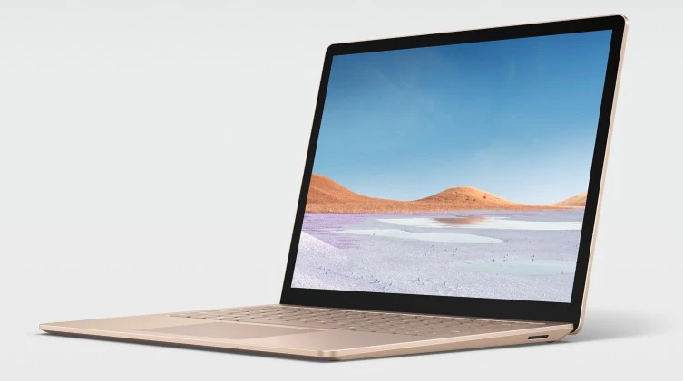

Microsoft Surface Laptop
Technical Specs
Processor : 8th Gen Intel (i5, i7)/ 10th Gen Intel(i5, i7)
Screen Size : 13 inch Retina
True Tone : Yes
Storage : 128GB/ 256GB/ 512GB/ 1TB
Graphics : Intel Iris Plus
RAM : 8GB/ 16GB
Keyboard : Backlit keyboard
Ports : 1 USB-C, 1 USB-A, 1 Microsoft charging slit
Review
Microsoft Surface Laptop, the Windows alternative to Macbook Air. The Surface series has been available for quite some time now and this is the third iteration. The surface laptop is a slim and compact ultrabook with low-wattage processors. The design and compactness is the major selling point of the device. The laptop is very thin and has a minimilistic design due to the unibody construction. Spec-wise the surface laptop equips Intel's y-series mobile processors which can handle daily lightweight tasks. The 3 by 2 aspect ratio of the display makes it a good option for creatice professionals as well for some light editing and content writing. All in all, the Surface Laptop 3 is a niche product for select few people looking for a thin Windows based ultrabook with premium design. Check out the Surface laptop in the link below.
Amazon Link: View